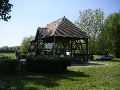
La première fête et concours international et même sans doute universel de navettes a eu lieu à Epernon (entre Rambouillet et Chartres) le 16 Mai 2004. Je dis "sans doute", car avec toutes les planètes que l'on découvre en ce moment, on ne peut pas être sûr que des extraterrestres n'aient pas déjà organisé un concours de navettes. Mais, sur Terre, c'est le premier (enfin, je crois).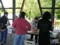
Dans le kiosque, Nathalie surtout s'est dévouée pour accueillir les cerfs-volistes et les enfants qui venaient s'inscrire pour faire faire à leur nounours ou assimilé un parachutage certifié par un diplôme attribué par le CVCF, tamponné et signé. Certains n'étaient pas très rassurés et quelques-uns ont même reculé devant le risque ! D'autres ont pu acheter pour une poignée de cacahuettes des cerfs-volants Eddies ou Coccinelles qui ont bien volé toute la journée, ou des badges divers. De la documentation sur les cerfs-volants, leur construction, le CVCF, etc. était aussi offerte à la consultation.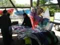
Dans un autre coin de ce vaste kiosque, Marc étalait ses cerfs-volants balinais, des oiseaux ou autres animaux volants plus ou moins féériques de bambou entoilé, pliants et peints à la main, de toute beauté.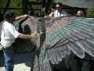
Mais il refuse de vendre le plus beau, son hibou, qu'il se garde jalousement.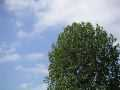
Le vent était largement suffisant mais très capricieux. Il a même provoqué un drame le matin, en lançant des cerfs-volants dans un tourbillon où deux ont été coupés et n'ont pas été retrouvés à l'heure où j'écris ces lignes, malgré des recherches motorisées à grand rayon d'action.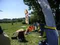
Mais cela n'a pas empêché les cerfs-volistes d'installer leurs campements provisoires, leurs fauteuils, leurs glacières, leurs caisses à matériel, leurs bannières et leurs banderoles pour animer et décorer la Prairie.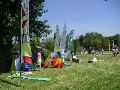
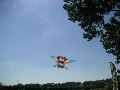
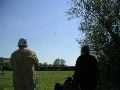
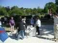
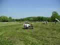
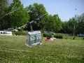
Mais on est quand même venu pour les navettes. Eh bien il y en a eu un paquet. Des classiques (voile en triangle, coulisse longitudinale, petit accrochage en bas), et des moins classiques comme ce téléphérique qui marche (à l'huile de coude !) avec tous les vents capables de soulever l'ensemble.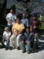